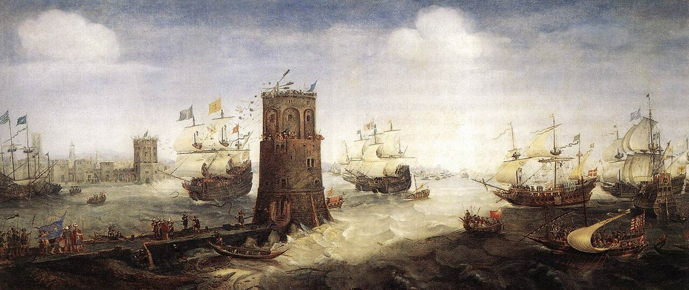
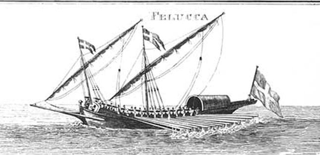
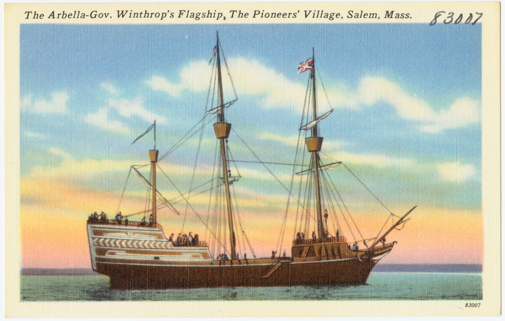
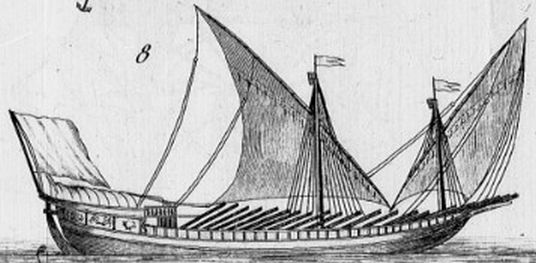

В предыдущем рассказе мы разбирались с терминологическими особенностями названий фелуки в русском языке. Сейчас попробуем найти корни этого термина в других языках.

Захват Дамьетты. Полотно Корнелиса Класа ван Вирингена. Ок. 1625. Frans Hals Museum, Харлем. Справа на переднем плане – фелука.
У Дэвида Стила (The Elements and Practice of Rigging And Seamanship, 1794, by David Steel) фелука (felucca) отнесена к категории иностранных судов и практически сводится к уменьшенному варианту галеры:
FELUCCA.
A small vessel used in the mediterranean, rigged and navigated similar to galleys; but seldom go out of sight of the coast.
Фелука. Небольшое судно на Средиземном море, оснащенное и управляемое подобно галерам; однако редко отходит в море вне видимости берега.

Почти аналогичное определение фелуки дает современник Стила Уильям Фалконер
A felucca is a strong passage-boat used in the Mediterranean, from ten to sixteen banks of oars. The natives of Barbary often employ boats of this sort as cruisers.
Фелука – крепкое каботажное судно, используется в Средиземном море. Имеет от десяти до шестнадцати банок для гребцов. Жители Северной Африки часто используют суда этого типа для патрульной службы.
Falconer-Universal Dictionary (1780), p.52 (в статье boat)
Вообще в английском языке термин felucca (falucca) появляется в начале XVII века. Одним из первых его использовал известный английский приватир той эпохи Дигби. В своих дневниках о плавании в Средиземное море в 1628 году (Sir Kenelm Digby, Journal of a Voyage Into the Mediterranean A.D.1628, опубликовано в 1868 г.) он пишет:
I sent out my pinnace and a falluca well armed and manned.
Я отправил пинас и фелуку с достаточным числом вооруженных людей.
Можно предположить, что и пинас и фелука были вспомогательными плавсредствами на флагманском корабле Дигби «Eagle» («Орел», позже переименованный в «Arbella» или «Arabella» в честь леди Арабеллы Джонсон, одной из влиятельных членов первой экспедиции пуритан, переселявшихся из Англии в Америку.) Вероятно, одно из этих судов следовало за «Орлом» на буксире, другое размещалось на палубе.

Корабль «Арбелла», бывший «Игл». Почтовая открытка. Boston Public Library
Исходя из информации о первых упоминаниях felucca в английских документах, появление фелуки «Добрая надежда» в романе Стивенсона «Черная стрела», действие которого происходит между маем 1460 и январем 1461 годов во время войны Алой и Белой розы (1455-1485), явно преждевременно.
Немногим раньше, чем у англичан, фелука появляется у французов.

Изображение фелуки в словаре Ромма (Romme, Dictionnaire de la marine française… , 1792)
Одно из первых словарных определений, в форме Falouque, мы находим в словаре Жана Нико (Thresor de la langue francoyse de Jean Nicot, 1606):
Falouque, f. penac. Est une maniere de vaisseau de bas bord à bancs et avirons, le plus petit de tous ceux qui sont à rame: Car du moindre allant au plus grand on les compte ainsi, Falouque, fregate, brigantin, fuste, galiote, galere, galeace, et à la falouque de cinq à six bancs de chasque bande, ou costé à un aviron ou vogueur pour banc, voyez les autres chascun en son lieu,
Фелука – вид низкобортного гребного судна, самого маленького из весельных судов. По возрастанию такие суда можно расположить в ряд: фелука, фрегат, бригантин, фуста, галиот, галера, галеас; на фелуке от пяти до шести банок по каждому борту, по одному веслу или гребцу на банке.
До этого термин Falouque у французов встречался лишь в рукописных документах, и то не ранее 1600 года. Правда, было одно упоминание «двух фелук из Англии» (deux flouques d'Angleterre ) в одном из нормандских документов, относящихся к 1544 году, но оно изолировано и еще требует внятной интерпретации.
Немногим раньше англичан и французов обрели этот термин итальянцы. Многообразие форм у них не должно удивлять: венецианцы, генуэзцы, пьемонтцы, римляне, сицилианцы и другие тех мест люди говорили на разных диалектах и писали названия одних и тех же кораблей по-разному. Но в среднем это были вариации feluca, faluca, filuca, filucca. Учитывая многообразие связей итальянских государств с другими территориями Европы, именно эти формы продолжили свое движение в европейские языки.
Предполагается, что и в английский, и во французский, и в итальянский язык термин фелука пришел из испанского. Именно falua (1371), а затем faluca, faluga (XVI век) были первыми европейскими именами для фелуки. А раз слово появилось на Пиренеях, то первое, о чем начинаешь думать, так это об арабском происхождении термина. Такие мысли посетили многих ученых, тем более что материала к размышлению у них было более чем достаточно.
Начиналось все еще с доклассических арабских времен, с арабских поэтов VI-VII вв. Именно у них корень <flk> (فلك) впервые использовался для слов, обозначающих плавсредства. Возможно, арабы заимствовали его у греков, где издавна существовало слово ἐφόλκιον – эфолкион, буксируемая лодка, шлюпка (Дворецкий). Правда, наши переводчики вольно обращались с этим термином, считали, что эту шлюпку корабли несли на своем борту. В качестве близкого примера вспомним «Сравнительные жизнеописания» Плутарха. Переводчик Г.А. Стратановский так пересказывает один из эпизодов жизни Помпея:
Петиций сразу узнал Помпея, каким тот явился ему во сне. Ударив себя по лбу, он велел матросам спустить шлюпку и протянул правую руку, приглашая Помпея взойти на корабль.
На самом деле в оригинальном тексте
ἐπιστήσας οὖν ὁ Πετίκιος εὐθὺς ἔγνω τὸν Πομπήϊον, οἷον ὄναρ εἶδε: καὶ πληξάμενος τὴν κεφαλὴν ἐκέλευσε τοὺς ναύτας τὸ ἐφόλκιον παραβαλεῖν, καὶ τὴν δεξιὰν ἐξέτεινε καὶ προσεκάλει τὸν Πομπήϊον,
не говорится о спуске шлюпки на воду, а всего лишь о подведении буксируемого эфолкиона к борту корабля, к тому месту, где находился трап (παραβαλεῖν, παραβάλλω – причаливать; приближаться, подходить (Дворецкий).
Но это так, попутное замечание. Нас же сейчас интересуют арабские тексты. И, конечно же, в первую очередь самый авторитетный из них – текст Корана.
В Суре 11 аят 37 говорится о сооружении Ноева ковчега
И сделай (о, Нух) ковчег пред Нашими глазами и по Нашему внушению и не говори со Мной о тех, которые совершали злодеяние [не проси отсрочки для неверных]: поистине, они будут потоплены!»
(Перевод Абу Аделя)
«Сделай ковчег» - это перевод арабского (ва асна’а аль-фульк).
Это же слово الْفُلْكَ - фульк - обозначает корабль и в Суре 10 аят 22
Он — Тот, Кто предоставил вам возможность путешествовать по суше и по морю. Вы путешествуете на кораблях, плывущих вместе с ними при благоприятном ветре, которому они рады. Но вдруг подует ураганный ветер, и волны подступят к ним со всех сторон. Они решат, что они окружены, и станут взывать к Аллаху, очищая перед Ним веру: «Если Ты спасешь нас отсюда, то мы будем одними из благодарных!».
(Перевод Эльмира Кулиева)
Но самые влиятельные арабисты практически единодушно отрицают возможность связи названия корабля из Корана с названиями европейских фелук. Р. Дози, например, считает, что слово фульк как обозначение судна в средневековом разговорном арабском отсутствовало, а тот факт, что оно встречается в стихах арабских поэтов – так они на то и поэты, чтобы извлекать из глубины веков словесный материал для своих творений («не город скажет он, а град, и рад, Что все слова его глядят назад» - это из «Крокодила» периода расцвета СССР, запомнилось почему-то). В прозе это слово и как родовое обозначение судна, и как название определенного типа кораблей напрочь отсутствовало. Дози считает, что испанский термин для фелуки произошел от известного арабского судна-брандера харраки: харракой называли не только суда с зажигательными смесями, но также и малые морские и речные суда, напоминающие галеры. Мы уже высказвали сомнение относительно этого в одном из предыдущих постов.
Более перспективной кажется гипотеза, которую предложил Joan Coromines. Каталанское falúa (это тоже фелука; слово дожило до наших дней, и означает оно сейчас командирский катер) – это заимствованное арабское فلوة falūwa, молодая кобыла. Именно так назвались у арабов небольшие юркие парусно-гребные суда. И именно в такой форме мы встречаем в каталанском языке falúa еще в 1372. В ходе дальнейшей эволюции в этом же языке появляется faluca (1561) затем faluga (ок. 1640), и, наконец, испанское faluca (1653-1673). Однако и эта гипотеза оспаривается в последнее время. Не отрицая арабского происхождения термина, современные ученые склонны считать, что появился в Европе он не через испанцев, а через итальянцев. Мы тоже склоняемся к этому мнению, однако точку в ученых спорах ставить еще рано.
Остановимся пока на этом в изучении термина, хотя к самим фелугам мы еще вернемся.